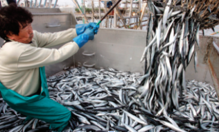

The world’s marine ecosystems supply humans with a rich supply of high-quality foods.
These foods include a great diversity of animals ranging from oysters, squid, and sea cucumbers to lobsters, shrimp, and fish. Many of these animals are harvested from natural populations, and others are “farmed” in cages or other engineered structures.
Tragically, many scientists believe that more than half of all major fisheries are unsustainable and in decline. Many different kinds of fisheries are at risk, including wild tuna and salmon, wild shrimp, north Atlantic cod, and many of the world’s large shark species. Scientists also believe that some fisheries are causing serious environmental damage to natural ecosystems.

Overharvesting, among other factors, may put this jack mackerel fishery at risk of collapsing.
How can fisheries become more sustainable? The federal government of Canada wants to evaluate the sustainability of a particular fishery, using the best data available. It also wants recommendations for ways the fishery can become more sustainable. You are part of an advisory group that has been commissioned to explore this issue.
|
The group includes.
|
Your group’s goal is to present a summary of the current status of your chosen fishery and outline a management plan to ensure that the fishery becomes sustainable. The plan will guide the Government of Canada’s fisheries policy.
Choose one of the roles listed above or another stakeholder of your choice.
What position do you approach the issue from?
What factors will you want to consider in your recommendations to the government panel? With your fellow group members, conduct research to inform your position. Use the following questions to help guide your research:
Based on your research, identify ways that the fishery can become more sustainable or improve its current practices.
• How can harvesting and/or farming methods be improved for this fishery?
• Is the demand for this species justified? If not, what actions could help reduce the demand?
• What role can consumers play in making this fishery more sustainable?
Make a Decision Based on the information you have gathered, determine how sustainable the fishery is and compile a set of recommendations for improvements to the fishery. Communicate
As a group, choose a suitable and creative format for presenting your information to
the government panel.
Canadians are major consumers of fisheries products. Many of these products being sold in Canada are not produced in a sustainable way. Investigate the availability of fisheries products in your own region and consider ways to enhance and encourage sustainable fisheries.